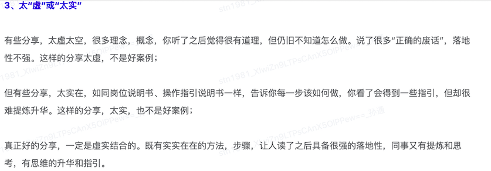

概述
- 工作年限越长, 沟通能力越发重要,演讲技巧越发有用
- 总体来说, 每次演讲需要彻底想清楚自己的目的, 要有一个底层逻辑(有一个总分总这样的框架或者区分阵营的逻辑), 具体细节就是临场发挥.
- 可以先用不是什么, 而是什么, 来加深受众的印象. 同时也拉长了演讲时间.
- 可以加一些缓和招数, 比如我喝个水, 比如我们稍等 1 分钟.
- 提问题时, 先问对方的目标, 你理想的情况是怎么样的.
- 一般的套路还是说先对齐目标, 盘点清楚现状, 然后大家对齐 KR(Key Result), KR 一定是某个(多个)指标数字化的结果.
- 多用给的表达方式, 多讲这个事情能给受众带来什么收益.
- 提前准备足够的理论知识, 理论要一套一套的, 多引用领导观点、名人名言
道
- 一切分论点，都是在为主题服务
- 20 字真言： 一听就能懂、从来没想到、再也忘不了、用了真有效
术
1 好的点
- 多使用专业术语
- 使用因果关系梳理 ，比如
那么，问题来了 - 所有的小点，都是为演讲主题服务的
- 真正好的分享，一定是虚实结合的。既有实实在在的方法、步骤，让人读了之后具备很强的落地性，同时又有提炼和思考，有思维的升华和指引.
2 要避免的点
- 避免在演讲过程中，首先引出一些缺点， 谈优点就谈优点，就高大上一些
- 避免结果与行动之间的关联度不大,
导致一个优秀的结果之间必定是有很多原因的，我们要找出最核心最关键的那个原因来分享，去除和结果无关的原因 - 避免题目太大、太宽泛，好的主题一定是
窄而深的 - 避免太虚或者太实，真正好的分享一定是虚虚实实，虚实结合的 
3 工作述职和工作总结
（一） 基本规范
- 把自己的工作进行分类、归纳
- 回答清楚自己做了什么，产生哪些价值，复盘哪些不足，未来什么规划
- 用数据图表形式展示自己做的工作的价值，强烈的结果导向和用户导向
- 要遵守
因为…所以我做了…的原则，体现我的价值. 简而言之:做事有依据、做完有证据.
（二） 考虑看的人的感受（考虑看的人手上拿着什么标尺）
- 领导是用标尺衡量下属的，我们要主动照着标尺去贴近
- 要看的人看下来觉得很简单明了，不费劲
(三)表达方式
- 说原因： 是某个核心模型的某个属性不行。比如成熟度不够。比如周期太长。
- 说过程： 某个核心模型，先评审。然后放入迭代中。然后做上线。
- 说成果： 一定是某个项目或者核心模型，他的某个属性得到了什么优化
(四) 模型的各种属性
- 项目
- 周期(太长/太短)
- 产出(是哪些方面,哪些点)
- 模型/能力
- 成熟度
- 熟练度
- 达到了一个比较高的程度
- 结论
- 可信度
生命中的一切事情，本质上都是一个项目。
-
在项目管理中，第一个关键要素，就是： 循环。
-
既然是有头有尾的事情，就要：“用循环解决问题”。 循环过程分为 5 个步骤：
启动、计划、执行、控制、收尾。 - 1）何谓启动？ 这事儿值不值得干？我们要不要干？需要哪些人？需要多少钱？
- 2）何谓计划？ 这事怎么干？投入多少时间？谁负责什么事？什么时间节点完成什么结果？资金怎么分配？资源怎么调配？时间怎么分配？任务怎么分配？
- 3）何谓执行？ 既然分配了，那就按照公司战略完善高效执行下去，不要眼高手低。
- 4）何谓控制？ 谁在负责这件事情？做的进展如何？达成目标了吗？按照进度跟进了吗？
- 5）何谓收尾？ 无论成败与否，我们来复盘一下有什么经验？什么教训？ 这 5 个步骤，构成完整循环，且缺一不可。 凡事有交代的背后，是一组严密执行的步骤。


4 演讲底层逻辑
万能套路
- 第一个公式：感谢+回顾+愿景；
- 第二个公式：过去+现在+未来；
- 第三个公式：感谢+感受+愿景；
举个例子比如我入职, 新人介绍:
- 过去我是一名 XXX, 现在我是一名父亲, 将来希望成为大家的好朋友.
万能模式
- 一二三模式，大道至简，万法归一。最简单但最有效的思维模式是凡事讲个一二三出来。
- 老板问你，这个项目怎么搞？你说：一二三。
- 领导问你，这个活动如何进行？你说：一二三。
- 主持人问你有什么体会，你说：一二三。
- 讲一个概念: 先说这个概念不是什么, 而是什么. 以前有什么不好, 现在有什么好.